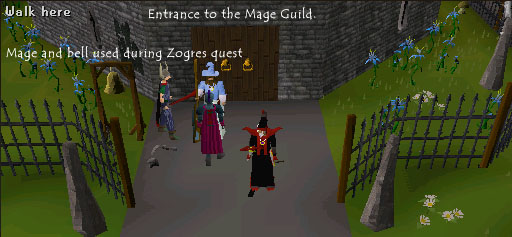
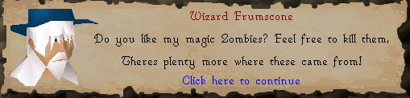
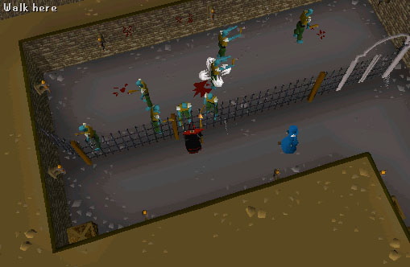
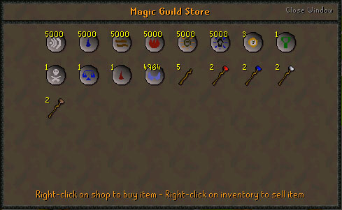
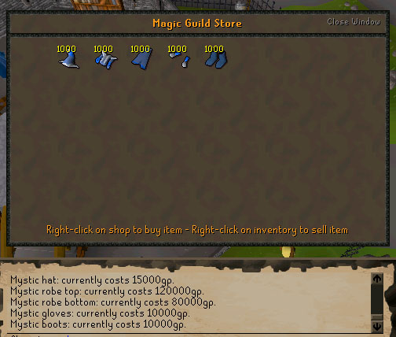
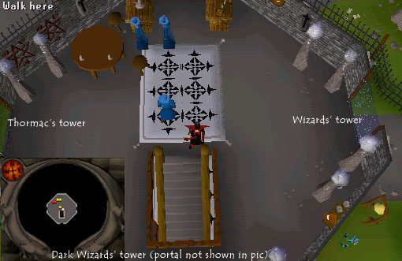

Magic Guild
The Mage Guild is situated in the centre of Yanille, south of Ardougne. Easiest way to get there without walking too much is to use Watchtower teleport (must have completed watchtower quest and must be level 58 magic). There is only one requirement to get in: must be level 66 magic, or level 63+ and drink Wizard's Mind Bomb beer right before getting in. The "bomb" can be bought at Falador's bar for 2gp.
Let's begin our tour of the guild at the lower floor, the basement. Here you can find caged zombies specifically designed for you to mage. There is a door that leads to where the zombies are. However you cannot open it. Hence if you are training there, I recommend u bring runes to cast telekinetic grab so you can get whatever drops you want from the other side.

Here are the zombies. All are level 24.

Moving up to the ground level we find 2 level 9 mages, which can be attacked by you; Wizard Distentor, which teleports you to the Essence Mine, and lastly we find Zavistic Rarve. He is the person you talk to during the Zogres quest. He can also be found outside the guild if you ring the bell by the entrance.

The Rune and the Mystic Robe stores are both find on the second floor, as well as 3 more level 9 mages.

Here is a picture of the items sold at the Rune store. The default stock for all runes is 5000, and the default stocks of battle staffs and elemental staffs are shown in the picture (5 and 2 respectively)

The following is a price table of the items sold in this store. This is just for REFERENCE, prices change depending on the current stock.

Here is the Robes store. Picture shows default stock.

At the top floor we find three level 9 mages and three portals, as well as 2 vial spawns. Portals:
East: Wizards' tower south of Draynor.
West: Thormac's tower, the one near magic trees. Thormac will turn battle staffs into Mystic staffs for 40000gp.
South: Dark Wizards' tower.

This Guild guide was written by Chopsteeq. Thanks to DRAVAN and Imperial G96 for corrections.
This Guild guide was entered into the database on Mon, May 23, 2005, at 08:17:38 PM by dravan and was last updated on Thu, Sep 08, 2005, at 09:42:32 PM by DRAVAN.